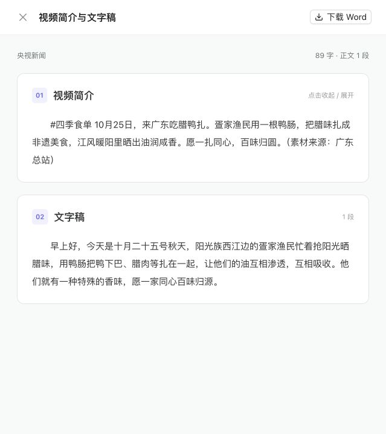

Deepquest · 2026-10-26 · 生产 HTTPS 验收16 个普通账户验收完成
核心用例通过，测试账户及业务数据已删除；外部存储独立复核无残留。
| 同时登录 | 16 / 16 通过 |
| 公众号独立会话 | 16 / 16 通过 |
| 并发页面 API | 384 次，100% 成功；P95 288.5 ms |
| 跨账户读取 | 80 / 80 次拒绝 |
| 上传、下载与 Word 交付 | 16 / 16 通过 |
| 知识库入库与检索 | 16 / 16 通过；入库最慢 11.33 秒 |
| 测试数据清理 | 账户、任务、知识库、文件、向量、对象存储、缓存均为 0 |
| 本机公网带宽 | 四路并发 32.58 Mbps；压缩传输量减少约 70% |
| 云端状态 | ready；API 未发生 OOM 或自动重启 |
实际执行
真实创建 16 个 role=user 账户并以随机密码登录，每人一个私有公众号空间、一条视频终态夹具和一个私有知识库。16 人并发访问本人记录并下载资源；交叉访问他人的视频、任务、文件和知识库均被拒绝。16 份文档经真实队列完成解析、向量入库和检索。
修复同一办公出口同时登录触发 429：快速节流容量调整为 32，Redis 登录失败限速及账户锁定仍保留。补齐普通用户任务可见范围和图谱任务提交人标识。
性能、资源与验证
4 核云机运行两个 API 进程，各任务 Worker 和数据库保留资源；容器可使用全部主机 CPU 与内存。验收后可用内存约 2.8 GB，PostgreSQL 当前 50 / 100 连接。公众号 16 个静态资源并发拉取由单次基线 673 ms 降至 242 ms，采用私有内容版本缓存；动态记录仍为 no-store。
598 项前端单测、构建和 lint 通过；登录与节流 9 项、知识库路由 23 项回归通过。初次组合云端测试的事件循环复用失败，已用独立进程重跑通过。20 个源码文件与云端一致，运行中 API 文件也核对摘要。本次后端文件的格式检查通过；静态检查单独排除了 main.py 已有的 E402 导入位置问题。
验收边界
- 16 个普通平台账户从云机通过生产公网 HTTPS 入口发压；并非 16 个地域终端的长时间容量或 SLA 测试。
- 公众号下载记录、视频终态和工作区源文件使用隔离夹具；文件 API、知识库入库、向量索引与检索真实执行。未替 16 个账户登录各自的微信。
- 带宽为当前本机到云端的链路实测；公众号资源耗时为同规模单次前后测量。外部微信限流及语音识别长任务不在本轮 384 次页面 API 延迟指标内。
页面实测
云端微信已连接，转录历史可打开文字稿预览；公众号历史和操作按钮正常加载。本地项目仍关闭，微信连接程序保留运行。

完整报告 JSON · 16 账户原始结果 · 外部存储清理复核 · 源码摘要